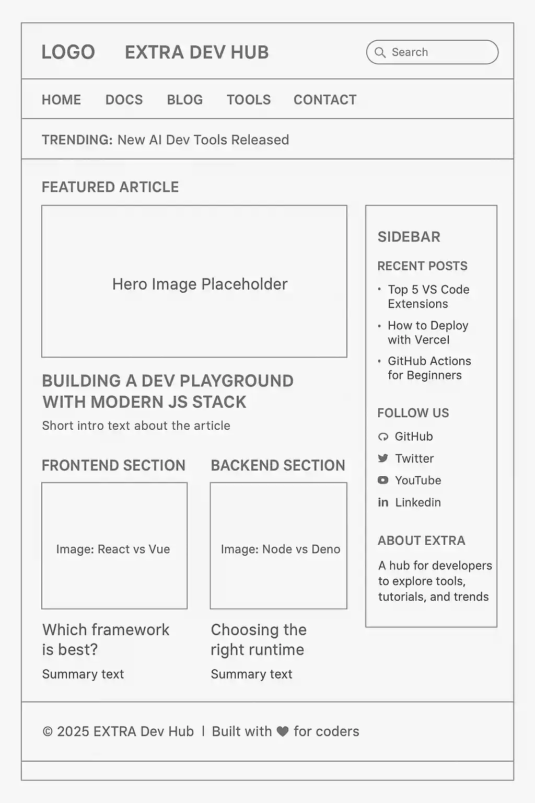
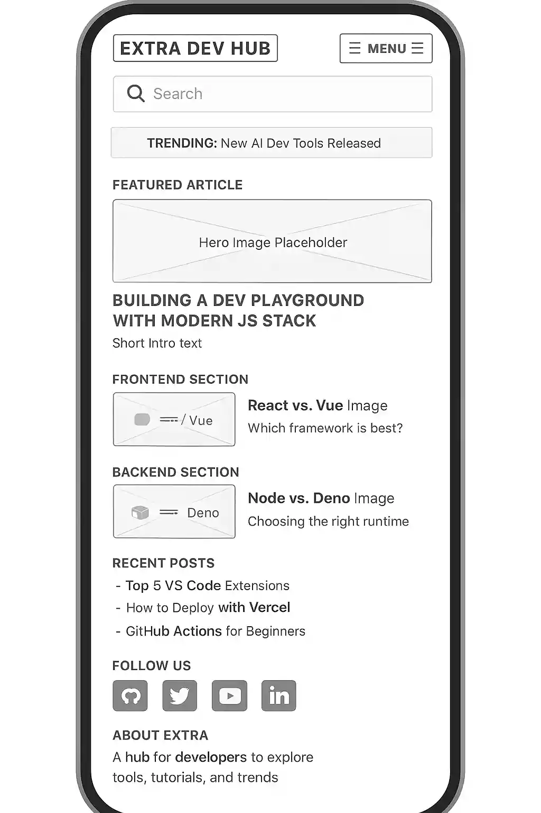

1. Site Name
Lmaly's Info-Tech Gossips
A fun, personal blog dishing out the latest "gossip" on web dev news, tutorials, and tips. It's conversational and Educative, perfect for Tech newbies who want quick, engaging reads.
Optional domain: lmalys-techgossips.com
2. Site Purpose
Lmaly's Info-Tech Gossips is your casual hub for web development updates — think tutorials on JS arrays, CSS tricks, and other hot tools. Features include dynamic article lists, search/filter, and localStorage-saved favorites to keep your favorite article.
3. Scenarios
- How do i save an important article i like on the page?
- How do i find saved articles?
- How do I search for "responsive design" tips across all posts?
4. Color Schema
Dark blue – For the main section body texts.
Dark red – For headings or sub headings of the header, main and footer.
Soft Blue-Gray – For highlighting text and links. example: H1 element in header and footer.
Contrast Navy – For nav, header and footer background.
Light Arsh – highlights of the main section text background.
5. Typography
Headings: "Outfit" – modern sans-serif for titles and sections.
Body: "Inter" – highly readable, clean sans-serif for articles and text.
6. Wireframe – Desktop View
Grid layout with sidebar for interactivity.

6. Wireframe – Mobile View
Simple stacked layout for easy scrolling on phones.
